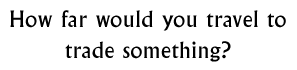

Discussion 5  |
|
Objectives: To explore which forms of transport were available in ancient India. To investigate how useful these forms of transport would have been in different areas and what they could carry. (Extend to look at trade routes and animals used for trade)
Materials: Physical map of ancient India (the Indus Valley specifically), pictures of different forms of transport from the era and animals used for transport and trade.
Class set-up: Teacher presentation / Class discussion
Vocabulary: trade route, transport
Discussion: Describe the physical geography of the Indus Valley. Get the pupils to think about the difficulties of travelling within and across the different regions.
Describe the different forms of transport available at different times. Discuss what differences these would make in how far people could travel and at what speed. Consider if the different forms of transport would allow people to transport different materials.
Think about how distance of transportation would make materials and goods more expensive.
Background information:
TradeRiver Indus River Saraswati River Ganga Cities of the Indus How Indus towns developed Subsistence economy
© The British Museum |